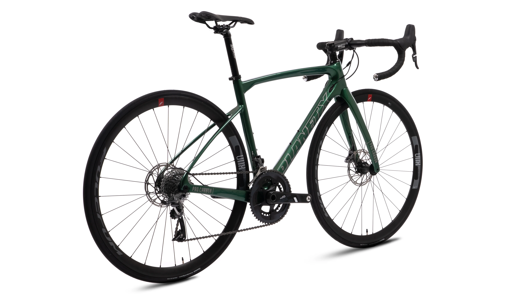

01111001 01101111 01110101 00100000 01110100 01101000 01101111 01110101 01100111 01101000 01110100 00100000 01111001 01101111 01110101 00100000 01110111 01100101 01110010 01100101 00100000 01110011 01100001 01100110 01100101 00100000 01100110 01110010 01101111 01101101 00100000 01110100 01101000 01100101 00100000 01100010 01101001 01101110 01100001 01110010 01111001 00101100 00100000 01111001 01101111 01110101 00100000 01110111 01100101 01110010 01100101 00100000 01110111 01110010 01101111 01101110 01100111 00101110
Riding a bike is a great way to get around and enjoy the outdoors. Follow these steps to learn how to ride a bike confidently.
Make sure you have a bike that fits your height and is in good working condition.
Always wear a helmet and consider other safety gear like knee and elbow pads.
Adjust the seat and handlebars to a comfortable height.
Find an open space and practice balancing on the bike without pedaling.
Push off with one foot, start pedaling, and keep a steady pace.
Practice using both the handbrakes and foot brakes to stop safely.
Lean your body and steer gently to make turns.
Practice regularly in a safe area until you feel confident riding in different conditions.
Congratulations! You've learned the basics of riding a bike. Remember, practice makes perfect, so keep riding and exploring!